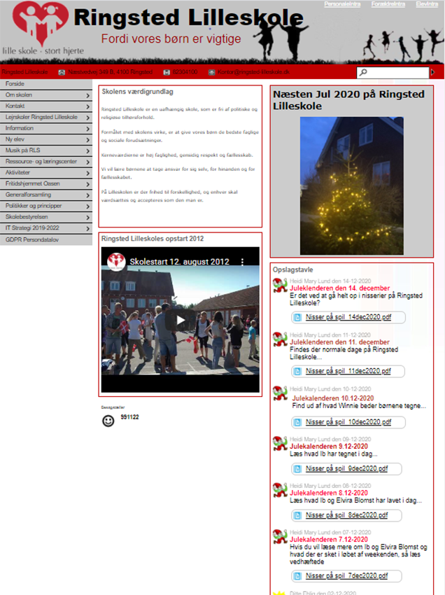

I dette projekt har jeg produceret et redesign af ringsted-lilleskole.dk, sammen med en studiegruppe. Projektet blev lavet på Adobe XD, som er et program der bruges til at lave interaktive prototyper. Her ses nogle billeder af hjemmesiden, før og efter redesignet.
Før
Efter


Den nuværende side har mange undersider. Det har vi i dette projekt samlet, for at gøre hjemmesiden mere overskuelig. Derudover har vi moderniseret hjemmesiden udsende. Dette og alle andre beslutninger er taget på baggrund af analyser og undersøgelser.
Se hele redesignet af hjemmesiden kan ses på dette link: https://xd.adobe.com/view/98fc8331-de8e-4804-b99e-c5fc5455755a-cdaf/?fullscreen